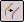

Derive a curve
-
Choose Surfacing tab→Curves group→Derived Curve

. -
Select the edges or curves from which you want to create a derived curve, and then click the Accept button.
-
Finish the feature.
-
You can use the Single Curve option on the command bar to specify whether the derived curve feature is created as a composite element or as curve.
-
When you set the Single Curve option, the new derived curve will consist of a single curve if the input curves are connected. If the input curves are connected, but not tangent, the output curve will have a minimal amount of curvature added so that a single, smooth b-spline curve is constructed.
-
You can construct a single derived curve from multiple bodies. For example, you can construct a derived curve from a sketch, edges on a construction surface, and edges on a solid.